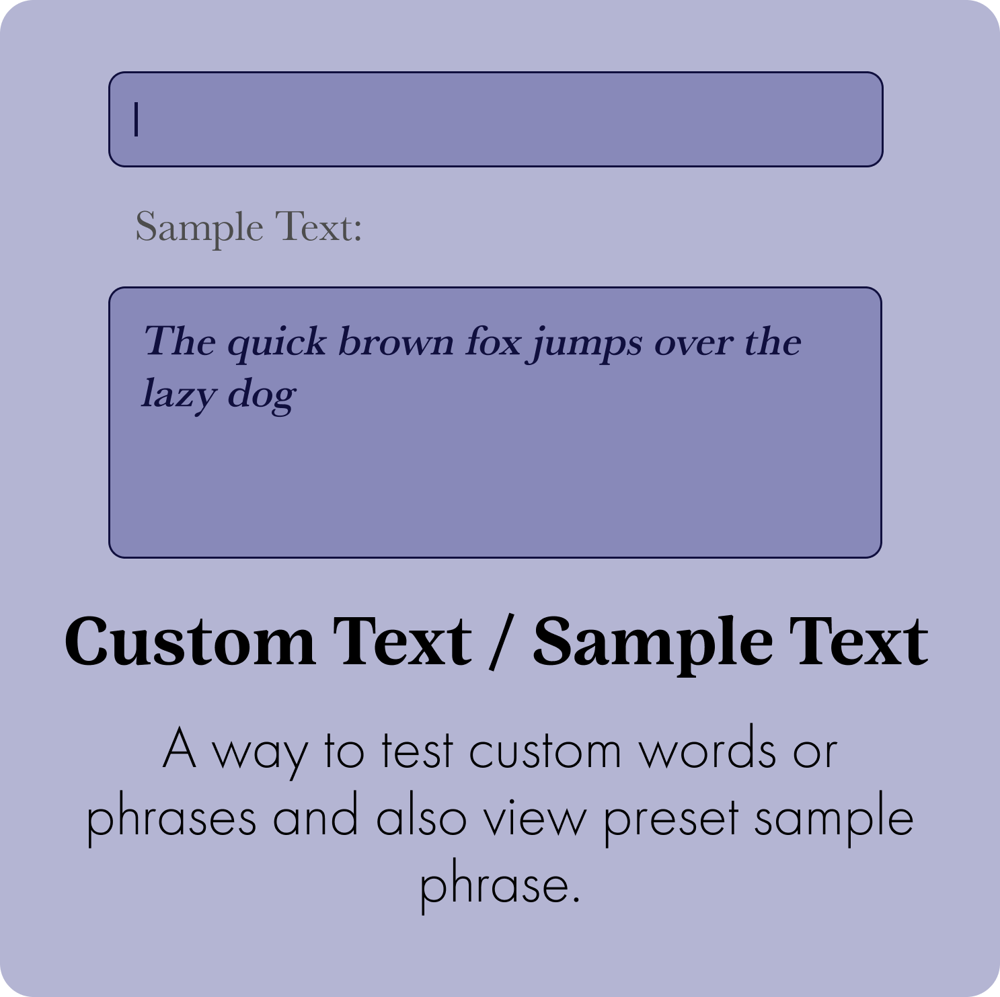
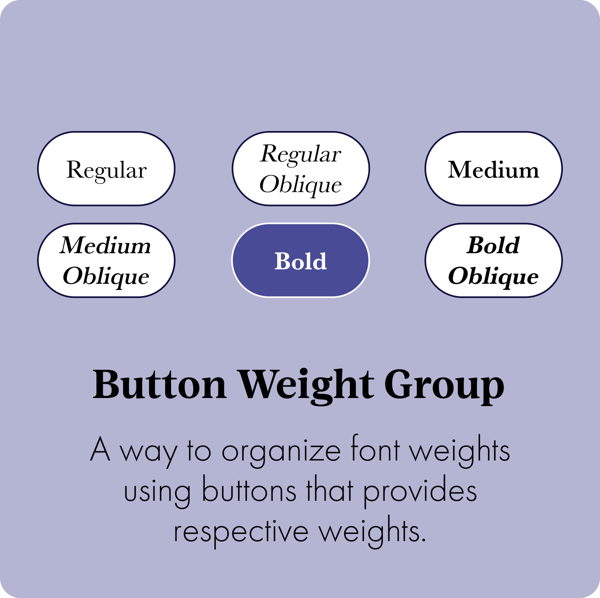
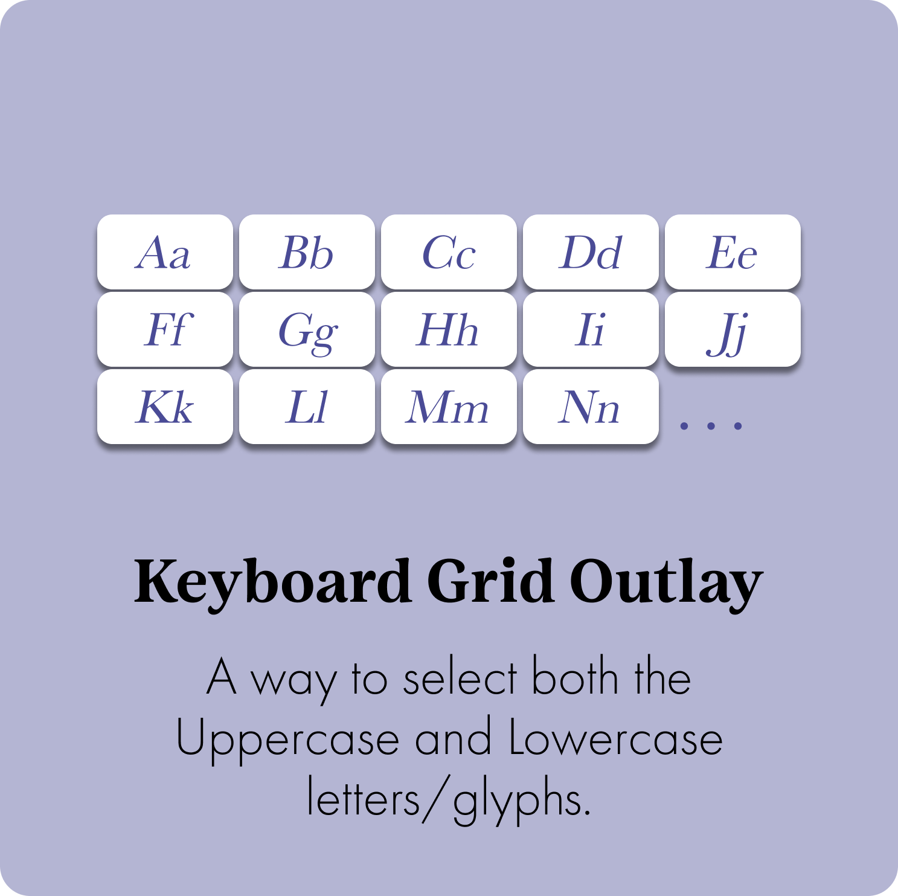
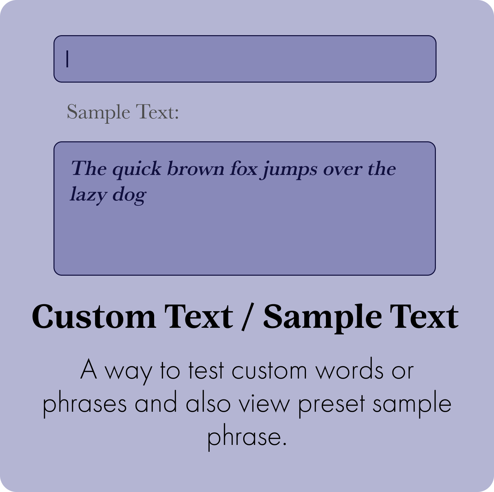
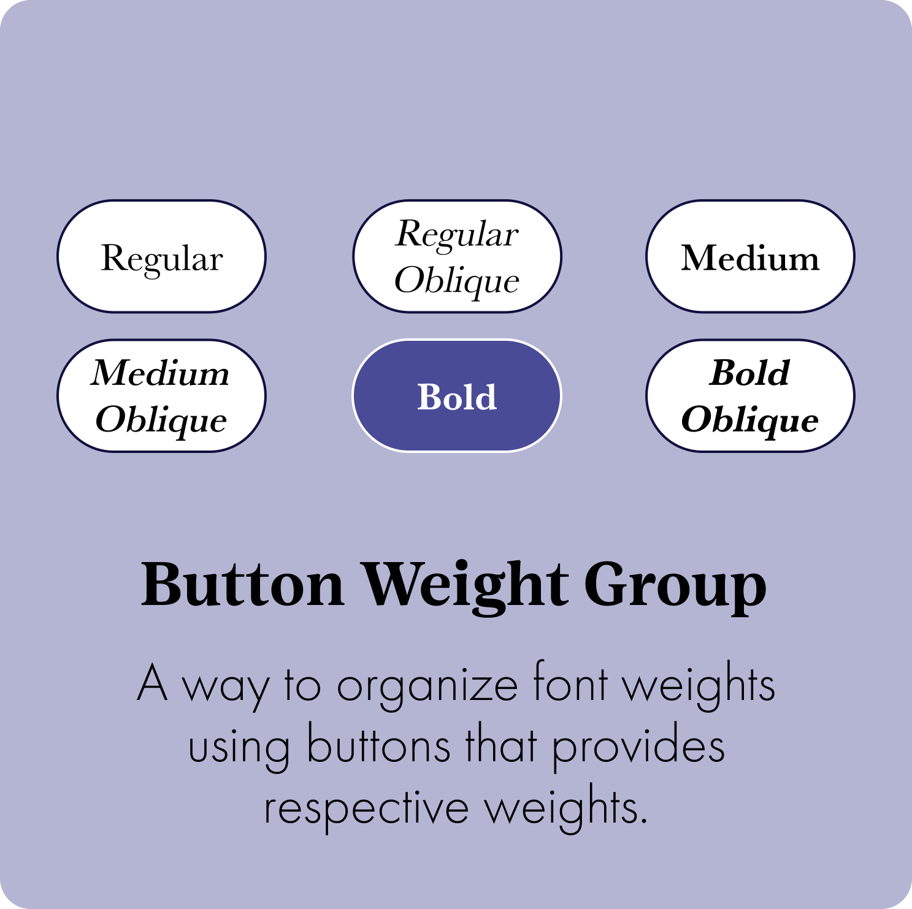
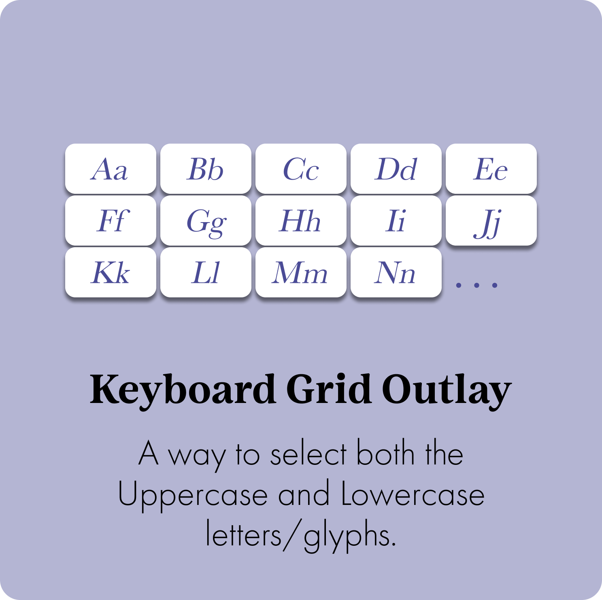

Wireframes
Sketches

Low Fidality
UI Design
 





- Minimalist look for easier readability and interaction having contrast between sharp shapes with rounded textiles.
- The color palette consists of darker purple and indigo hues which aligns perfectly with Baskerville’s classic and elegant personality.
- The font color varies throughout the app based on intractability, however the central focal character font is black to ensure high stroke contrast and crisp.